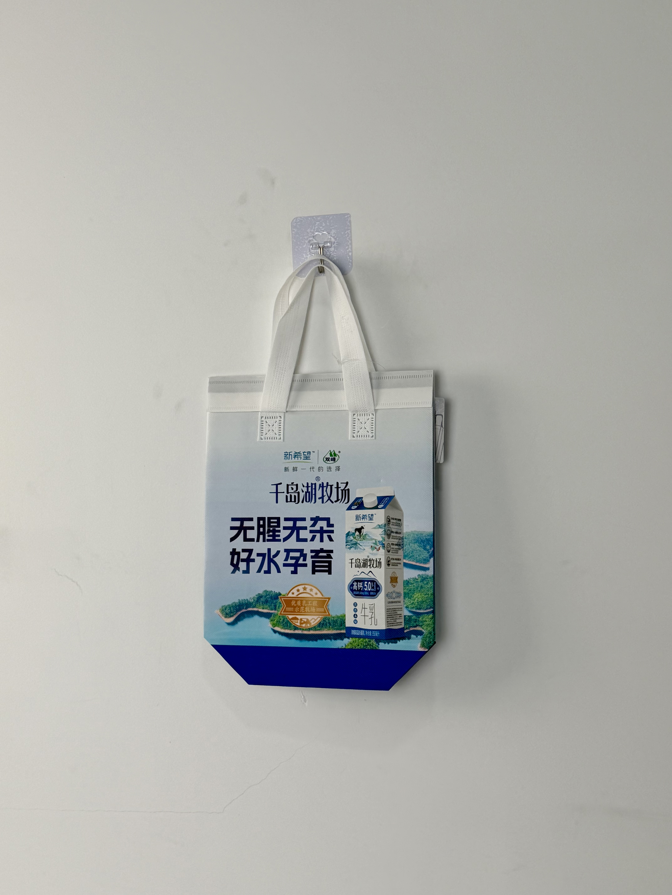

A premium cold-chain delivery bag for New Hope Dairy's Qiandao Lake Ranch milk line, featuring product-forward photography and scenic lake-landscape imagery that connects consumers directly to the source of their dairy.

New Hope Dairy is one of China's largest and most trusted dairy producers, operating under the broader New Hope Group conglomerate. The brand's Qiandao Lake Ranch product line leverages the pristine water quality of Zhejiang's famous Thousand Island Lake to position its milk as purer, fresher, and more natural than competitors. In a market where consumers increasingly scrutinize dairy sourcing and safety, New Hope's transparency about ranch location and water quality has become a key competitive differentiator.
Our customers want to know where their milk comes from. The bag is an opportunity to show them — not just tell them.
The thermal delivery bag was developed for New Hope's fresh-milk home-delivery service and supermarket cold-chain distribution. Fresh milk requires strict temperature control to prevent spoilage and maintain nutritional integrity, making the thermal bag not just marketing material but a critical component of product quality assurance.
The design strategy is "farm to doorstep": the bag's printed surface transports consumers to the Qiandao Lake ranch itself. Panoramic landscape photography of the lake's iconic forested islands creates an immediate sense of natural purity, while the prominently featured milk carton allows customers to identify the specific product being delivered. The tagline "无腥无杂 好水孕育" (No Fishy Taste, No Impurities, Nurtured by Good Water) reinforces the water-quality positioning.
Qiandao Lake landscape imagery creates immediate natural-purity association and sourcing transparency.
Large-format milk carton photography ensures product identification and reinforces brand-product linkage.
"好水孕育" tagline directly communicates the Qiandao Lake sourcing story in four characters.
New Hope and Shuangfeng (双峰) co-branding leverages sub-brand equity within the parent portfolio.
Fresh dairy delivery demands the most precise cold-chain specifications of any food category. Milk spoilage accelerates dramatically above 4°C, and temperature fluctuations can compromise both safety and taste. The New Hope bag was engineered with enhanced insulation thickness and rapid-seal closure to maintain optimal dairy conditions.
| Parameter | Specification | Test Standard |
|---|---|---|
| Dairy Cold Retention | < 4°C for 60 min (30°C ambient) | Internal Protocol |
| Load Capacity | 5 kg | ASTM D5265 |
| Print Resolution | 175 LPI | Internal Protocol |
| Seal Integrity | > 24 hours peel adhesion | ASTM D3330 |
The six-stage production workflow prioritized photographic print quality and thermal performance. Dairy-grade cold retention required thicker foam bonding and strict seal testing.
120gsm optical-white non-woven PP. Color profile calibrated for landscape photography gamut reproduction.
CMYK process print for Qiandao Lake scenery and milk carton. Registration within ±0.5mm for product detail clarity.
18-micron gloss BOPP enhancing landscape color depth and product-pack visual vibrancy. Calendered for flat finish.
5mm EPE foam laminated to aluminum-PE barrier. Heat-compression at 4kg/cm for maximum thermal sandwich integrity.
Ultrasonic die-cutting with 14cm box gusset. Heat-sealed base for stable milk-carton standing.
Adhesive peel strip applied to top closure. Thermal probe validation for 60-minute < 4°C retention. AQL 1.0 inspection.
The thermal bag was deployed across New Hope's home-delivery subscription service and premium supermarket channels in East China. Rollout timing aligned with the summer heat wave when cold-chain reliability becomes most critical for consumer satisfaction.
Key Insight: Consumer research showed that the Qiandao Lake landscape imagery directly influenced purchase decisions. Customers who saw the bag before tasting the milk rated the product as "fresher tasting" in blind comparisons — demonstrating that packaging imagery can create perceptual flavor expectations that enhance actual product experience.
The product-forward photography also reduced delivery confusion. Subscription customers could immediately verify that the correct product variant had been delivered, reducing customer-service inquiries by 22% compared to previous plain-bag packaging.
Three design decisions differentiate this dairy delivery bag from standard cold-chain packaging. Each addresses specific challenges in China's premium fresh-milk market.
Chinese dairy consumers remain highly sensitive to food-safety scandals. By printing the actual Qiandao Lake landscape on every delivery bag, New Hope transforms abstract "pure sourcing" claims into visual proof. The landscape isn't decoration — it's evidence.
Standard 2-3mm bags allow milk temperature to approach the spoilage threshold within 30 minutes in summer heat. The 5mm specification maintains dairy-safe temperatures for a full hour — the difference between confident home delivery and anxious temperature checking.
New Hope produces multiple milk variants (skim, whole, calcium-fortified, organic) that look similar in plain packaging. The large-format carton photography on the delivery bag eliminates delivery confusion, ensuring customers receive exactly the product they ordered and subscribed to.
We engineer enhanced cold-retention bags for dairy, fresh food, and temperature-sensitive products. From farm-to-doorstep storytelling to dairy-safe thermal specifications, we protect your product and tell your sourcing story.